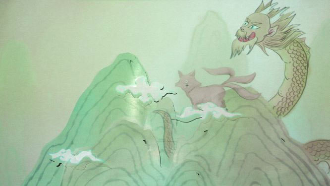
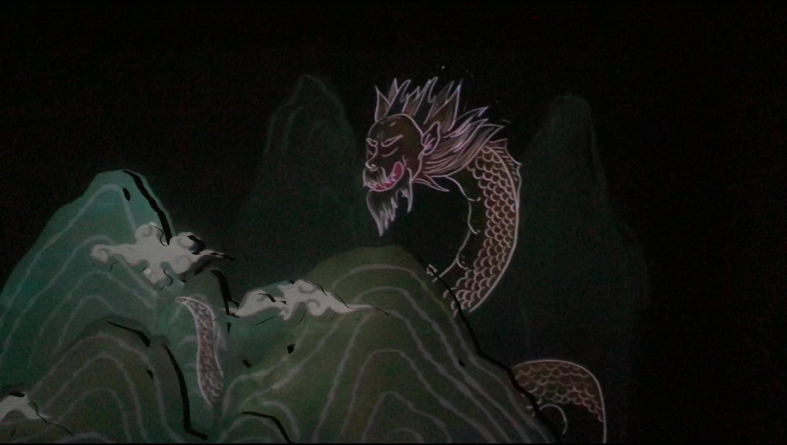
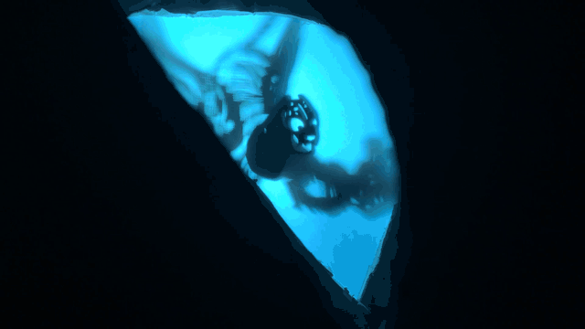
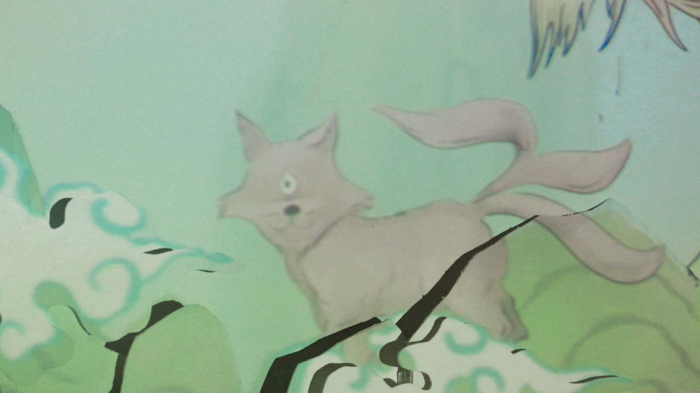

An interactive installation based on Processing and Arduino
Nov 2018 – Dec 2018
Academic Project | Tsinghua University, China
Skills
Interactive Technology, Interactive Media Design
Role
concept designer, interaction designer, programmer, character designer
This is an interactive installation based on Arduino and processing. The Ancient Chinese book The Classic of Mountains and Seas was relived using interactive media; the monsters featured in the book are shown in 3-dimensional mountain backgrounds using dynamic projection and shadow play which changes accordingly as the viewer progresses through the scene.
The Classic of Mountains and Seas, is a classic Chinese text compiled of mythical geography and figures. Readers over the past hundreds of years have been both baffled and amazed by the imaginary world it creates. According to studies of the book, we could tell the writer of the book got the inspirations of the stories from various old paintings.
I want to use interactive media to help modern people relive the world of The Classic of Mountains and Seas, a world where fiction and reality intertwines. I want to use projectors and “shadow play” to show several kinds of beasts from the book, then use interactive technology to enable the audience to interact with the beasts.
Zhuyin plays the beast who controls day and night.
The projected beasts change as the day and the night shift.
Daytime
When Zhuyin opens his eyes, it’s the day.
Night
When Zhuyin closes his eyes, it’s the night.
When the beasts show up, the sensor will play a sound of the beast and project a written description of the beast.
When the audience gets closer to the cave, the cave will light up, attracting the audience to look inside. Some caves contain beasts, some don’t. The audience needs to explore themselves. I use the “shadow play” technique to show the beasts.
Qiong Qi is eating a person starting from the head inside.
At this moment, Huan appears immediately in the sky riding a cloud and his auspicious spirit drives Qiong Qi away.
I used Arduino and human-body infrared sensor to enable the audience to interact with the beasts.
Human-body infrared sensor
When it detects that the audience gets closer, it will transmit information to the Arduino motherboard. So the motion sensor or projector activates so that the audience can see the movements of the beasts inside the caves or on the projection.
Arduino motherboard
After receiving the information of people approaching the cave, it will send the information remotely through wifi wireless modules to Processing or activates the Servo so that the audience can see the movements of the beasts on the projection or inside the caves.
Processing
After receiving the signal from Arduino, it will control the projector to cast the corresponding After Effects animation.